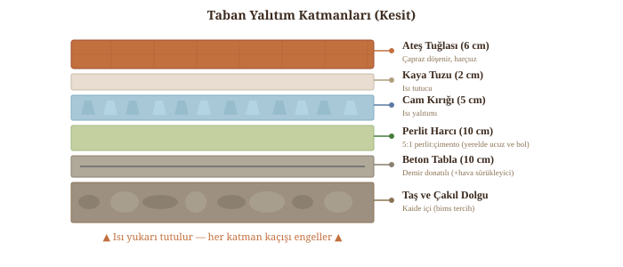

Taban Yalıtım Katmanları
Fırın performansını belirleyen en kritik kısım. Yalıtımsız bir fırında ısı tabandan kaçar, aşırı odun tüketilir ve taban pişiremez.
Neden Perlit?
Uluslararası planlar (Forno Bravo vb.) ABD pazarı için vermikülit önerir. Ancak Türkiye dünyanın en büyük perlit üreticilerinden biridir (Çin ile birlikte ilk ikide) — perlit yerelde ucuz ve kolay bulunur (yapı marketleri, Trendyol, perlit üreticileri), üstelik ısıl iletkenliği vermikülitten %6 daha düşüktür (λ ≈ 0.045 W/mK). Bu yüzden bu rehberde perlit varsayılan yalıtım malzemesidir.
Bims (pomza) da tasarıma dahildir: perlit+vermikülit+bims üçlü kompoziti tekli malzemelerden daha yüksek yangın direnci gösterir (Çukurova Üniv., 2016).

📊 Yalıtım Malzemeleri — Bilimsel Karşılaştırma
Kaynaklar: Pamukkale Üniv. 2018; Low, 1984; Springer 2003; Int. J. Thermophysics 2025; Kocaeli Üniv. 2018. Bims tek başına perlit/vermikülitten zayıf yalıtır ancak üçlü kompozitte yangın direncini en yükseğe çıkarır (Çukurova Üniv. 2016).
Malzeme Listesi (90 cm fırın)
📐 Forno Bravo Teknik Spesifikasyonları
Ateş Tuğlası (Orta Görev): %38 alümina, 2145 kg/m³ yoğunluk, 1370°C'ye (2500°F) dayanıklı. Üretimde 186 bar (2700 PSI) basınçla sıkıştırılıp 1455°C'de (2650°F) fırınlanır.
Taban Yalıtımı: 10 cm perlit veya vermikülit + çimento betonu (Portland burada güvenli — ateşle temas etmez) VEYA 5 cm kalsiyum silikat levha. Altında 9 cm demir donatılı yapısal beton (hava sürükleyici katkıyla ısıl iletkenlik %35 düşürülebilir — ÖHÜ, 2018).
Kubbe Duvar Kalınlığı: 10-11.5 cm (yarım tuğla). Tek bir yakmayla hindi kızartacak kadar ısı tutabilir.
Kaynak: Forno Bravo Pompeii Oven Plans v2.0 ve Kit Specifications
Ekonomik Alternatif: Harman Tuğlası (Çingene Tuğlası)
Halk arasında "çingene tuğlası" da denen harman tuğlası, elle/kalıpla şekillendirilip açık harmanda kurutulan ve 600-800°C'de pişirilen geleneksel kırmızı tuğladır. Anadolu köy fırını ve tandır geleneğinde yaygındır; tam şamot fırına göre %40-60 maliyet tasarrufu sağlar. Ancak şamotun (1200-1800°C dayanım) tam alternatifi değildir — kullanım yeri kritiktir.
Çingene tuğlası ayrı bir alt-tip değildir; harman tuğlasının bölgesel/halk arasındaki eş anlamlısıdır. Türk usta paylaşımları (Uğur Bolat blogu, Akea Woodworking, Aktaş Çini) hibrit kullanımı standart öneri olarak sunar.
🧱 Hibrit Tuğla Stratejisi — Nerede Hangisi?
| Bölge | Önerilen | Gerekçe |
|---|---|---|
| Pişirme tabanı | Şamot/ateş tuğlası (zorunlu) | Doğrudan kor teması, 900°C+, gıda hijyeni, termal şok |
| Yanma haznesi alt sırası | Şamot (tercih) | Alev dilinin ilk çarptığı sıcak nokta |
| Kubbe gövdesi ve üstü | Harman tuğlası uygun | İç yüzey ~400-500°C; fiziksel temas yok (kürek değmez, sadece alev yalar); ekonomik ve geleneksel |
| Fırın ağzı, baca | Harman tuğlası uygun | Sıcaklık düşer, alev teması azdır |
| Dış kabuk / izolasyon | Harman + samanlı kerpiç sıva | Mükemmel ısıl izolasyon, geleneksel |
Kaynak: Uğur Bolat — Köy Fırını Yapımı (yorumlardaki usta paylaşımları); Akea Woodworking uygulama günlüğü; Forno Bravo Brick Primer; Aktaş Çini DIY kılavuzu; Diyarbakır Dergisi — Harman Tuğlası Üretimi (akademik).
📍 Bölgesel Kalite Farkı — Hangi Üreticiden?
| Bölge | Kil tipi | Fırın için |
|---|---|---|
| Eskişehir (Karadağ, Eren) | Kaolinit ağırlıklı, alümina yüksek | ⭐ En çok önerilen |
| Trakya (İtimat) | Demir oksit yüksek, sert | İyi |
| Diyarbakır (gerçek köy harmanı) | Alüviyal, otantik | Romantik ama atölye azalıyor |
| Konya / Kayseri | Kireç oranı yüksek | ⚠️ Riskli — ısıda kireç patlaması yapabilir |
| Çorum / Boyabat | Orta sertlik | Fiyat/kalite dengesi iyi |
Köy harmanı vs fabrika harmanı: Geleneksel köy harmanı 600-800°C'de pişirilir (gözenekli, ısıl şoka hassas). "Fırın harmanı" veya "kubbe harmanı" diye satılan fabrika ürünü 900-1100°C'de tünel fırında pişirilir, su emişi <%18 — fırın yapımı için bunu tercih edin.
Boyut: Kubbe için 19×9×5 dolu, taban için 20×10×5 dolu. Delikli (oluklu) tuğla asla kullanılmaz — termal şokta çatlar.
Aktif el yapımı/fabrika harmanı üreticileri (2026): İtimat Harman Tuğla (Trakya), Karadağ & Eren (Eskişehir, 1966+), Arda Tuğla, Vesfa, Asya Toprak, Doğanay, Erbaa, Yaylaoğlu. Fiyat aralığı: 8-25 TL/adet; 90 cm fırın için ~250-350 adet kubbe + 60-80 adet taban.
Kaynak: TUKDER üretici listesi; Diyarbakır Dergisi (Dalkılıç & Nabikoğlu) — Harman Tuğlası Üretimi; MTA refrakter killer raporu.
Ana Yapı
~350 ateş tuğlası (≥%30 alümina, tercihen %38) — taban + alev zonu için zorunlu · ~80 briket · ~30 taban taşı (6 cm) · harman tuğlası (kubbe üstü + dış kabuk için ekonomik tercih)
Harç
Ateş kili/şamot tozu (25 kg) · Kalsiyum alüminat çimentosu (kubbe ve iç yüzey için ideal) · Portland çimentosu SADECE taban yalıtımı ve dış yapıda · ince kum · kireç
Yalıtım
Genleştirilmiş perlit (taban harcı + gevşek dolgu) · bims/pomza agrega (kaide dolgusu + kompozit) · taş yünü veya seramik battaniye (1260°C, kubbe dış) · gevşek perlit veya vermikülit (kubbe-duvar arası dolgu) · cam kırığı · kaya tuzu
Tamamlayıcı
Demir donatı (12 mm, 30 cm aralıkla) · kümes teli · sac kapak · baca tuğlası + klape · baca şapkası · hava sürükleyici beton katkısı (yapısal beton için opsiyonel)